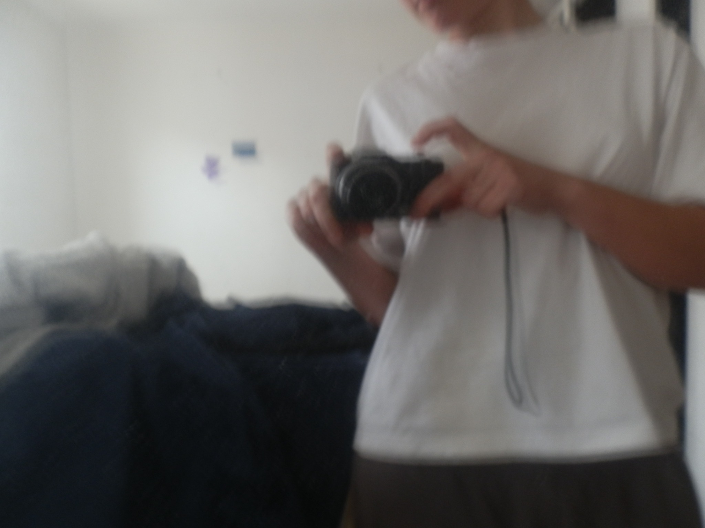

¿qué es escribir con imágenes? o sea ahora hay que poner las fotos muy horizontales en instagram. lx modernx tiene sus fases. me gusta esta de las imágenes tendidas. me recuerda a la profe de aless, que sube fotitos disfrutando de la vida. la horizontalidad en la imagen a mí me da paz. porfa modernxs no cambiémos de momento. también te digo en la época de subir vertical, en el feed horizontal, y ahora en la historia horizontal y en el feed vertical. pa variar, pero no me gusta. suspongo que son pequeños retos virtuales, que de repente me importan cuando me saco una fotito contigo, pero luego pienso ba!

ver puesteexplico